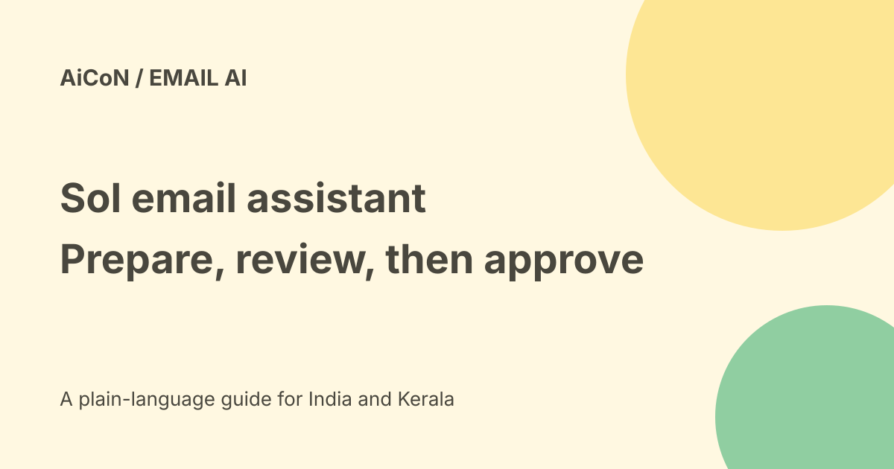

Sol email assistant: commitments, approval and access
Sol is an email-focused AI assistant from Sol Foundry Inc. Its launch says it finds commitments in Gmail, prepares the related work and returns for approval before anything final is sent, scheduled or shared. That is the company's described design, not a verified test of a connected inbox.

What does a commitment mean?
An email saying "I'll send the analysis" can imply research and a document. A request to align can imply meeting coordination. Sol's launch describes spotting these open jobs instead of waiting for a fresh prompt.
That still needs interpretation. A draft promise, a quoted thread and a request from someone else are different from your own decision. Check what the assistant thinks you agreed to before approving the result.
What work does it prepare?
The official pages list research, documents, presentations, proposed meeting coordination and draft replies. These are capability descriptions, not proof that a specific task will finish correctly.
A useful review checks more than spelling. Confirm the facts, file, account, people and timing. A polished deck can still quote the wrong numbers or reach the wrong audience.
Approval is the important boundary
The dated launch says the user remains at the approval point before anything final is sent, scheduled or shared. Do not confuse background preparation with permission to represent you.
This guide did not connect Gmail or send, share or schedule anything through Sol. We did not test the approval screen, changes after approval or whether every possible side effect is held.
Current access and price
The 22 September 2026 announcement describes selective access and a waitlist. We did not verify that general access has opened for every applicant or that an Indian Gmail account can activate it immediately.
No public final subscription price, free allowance or INR checkout total was established in the pages checked. A waitlist and a funding announcement do not make a service free.
Funding is separate from your bill
Sol announced US$4 million from General Catalyst, Nexus Venture Partners, DeVC, Peercheque and Kunal Shah. Entrackr also reported the round.
At the checked approximate Wise rate of Rs 96.47 per US dollar, US$4 million is about Rs 38.59 crore. This updates the archive's older approximate Rs 35 crore conversion. It is an illustration, not a final transfer or investment quote.
Privacy claims need careful reading
The homepage says Sol does not sell, share or train on your data, including provider training, and describes encryption and CASA Tier 2 verification.
These are company statements. We did not audit them or inspect a full current agreement. Before connecting work email, review permissions, retention, deletion, subprocessors, organisational rules and the actual scope of account access.
A cautious first-use checklist
- Open the exact official Sol page, not a similarly named email product.
- Check current access and pricing.
- Ask your employer whether email access is allowed.
- Read permissions and privacy terms before linking Gmail.
- Start with a harmless task without customer data.
- Check the commitment it inferred.
- Inspect the finished words, recipient and any file together.
- Verify a sent or scheduled result in the real service.
- Remove access when you no longer need it.
India and practical limits
Gmail is the launch integration described. Malayalam quality, India billing, organisation compatibility and any broader integration availability were not tested.
Sol here is not GPT-6.1 Sol, nor another service named Solo. Similar names are not evidence that prices, permissions or features carry across.
What changed since the original post?
We add the selective-access limit, separate funding from price, update the illustrative rupee conversion and qualify privacy and approval as vendor descriptions rather than a hands-on guarantee.
Frequently asked questions
Is there a confirmed free plan?
No public free allowance was verified.
Does an email promise count as permission to send?
The product describes returning for final approval. Review the actual outgoing result.
Was an inbox connected for this guide?
No.
Sources: Official Sol homepage · Official September launch · Entrackr funding report · Approximate USD/INR reference. Checked 7 October 2026.